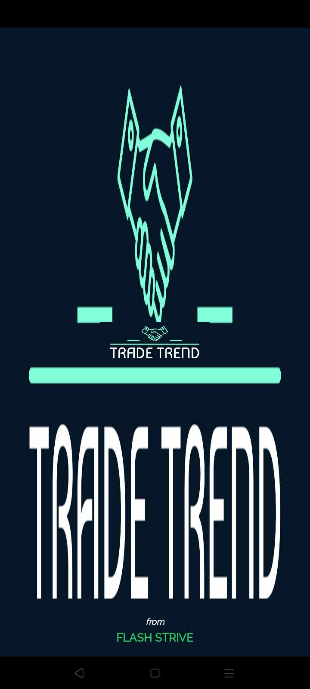

Mobile Development
FlutterDartAndroid Studio
Available for opportunities
I build applications and interactive projects across mobile, web, programming, and game development.
A Developer Who Learns by Building
I'm a developer who enjoys turning ideas into practical, functional software. My primary focus is Android app development using Java, with additional experience in web development, database-driven systems, and game development using Godot.
I've worked on projects involving mobile applications, management systems, attendance tracking, and interactive game features. I enjoy solving problems, learning new technologies, and building software that addresses real-world needs. I'm open to freelance opportunities and eager to collaborate on projects where I can turn ideas into useful digital solutions.

An AI-assisted learning platform that helps students learn programming through live coding guidance, AI-generated responses, and line-by-line code explanations. Integrated an AI API to provide interactive support and help students better understand programming concepts.
• Live coding guidance for students
• AI-generated responses and interactive support
• Line-by-line code explanations to improve understanding

A desktop application that automates student attendance using RFID technology and notifies parents by mobile number when a student enters the school or attends a class.
• Automated student attendance tracking using RFID scans
• Automatic parent notification via mobile number when a student enters school or attends
• Desktop-based administration and record management

A desktop application that simulates electrical wiring connectivity for students, helping them visualize circuit connections and identify errors to avoid incidents.
• Interactive simulation of electrical wiring connectivity
• Real-time error detection to help students avoid incidents
• Educational tool for electrical students to practice circuit assembly
/Screenshot_20241116-134303.png)
A mobile app that helps users book travel destinations, discover places they want to buy or visit, and plan road itineraries showcasing tourist spots along their route.
• Book destinations and places you want to visit or purchase
• Show tourist spots and points of interest
• Plan and display road itineraries for tours

A combined web and mobile application for monitoring merchant store operations, providing management tools for every store location.
• Web and mobile interfaces for merchant store monitoring
• Management dashboard for every store location
• Cross-platform access for business operations

A trading app connecting big farmers, small farmers, and backyard farmers to help them exchange products and communicate with each other.
• Platform for big, small, and backyard farmers to trade products
• Built-in messaging to help farmers communicate directly
• Marketplace for agricultural product exchange

A Godot game featuring a shape-combination system, world decoration, player exploration, house building, farming, income generation, coins, and unlockable items.
• Shape-combination system for crafting and building
• World decoration and player exploration
• House building, farming, and income generation with coins
• Unlockable items to reward progression
Explore. Build. Grow.
I began by exploring programming fundamentals and core technologies — Java, HTML, CSS, JavaScript, and Python. Experimenting with these languages helped me discover my interest in software development, especially building practical Android applications.
Built Android applications, management systems, and interactive games using Java, Firebase, and Godot. Integrated SMS and Maps APIs, along with an AI API for CodeMentor, an AI-powered coding tutor that guides students through live coding with line-by-line explanations.
I continue refining my skills with tools like Android Studio and Godot, tackling new technical challenges, and exploring how software can support agriculture — including practical digital solutions for backyard farming and farm management.
Have an opportunity or idea?
I'm open to development projects, freelance opportunities, and collaborations. Have an idea or project in mind? Let's connect!
jhoneperry014@gmail.com